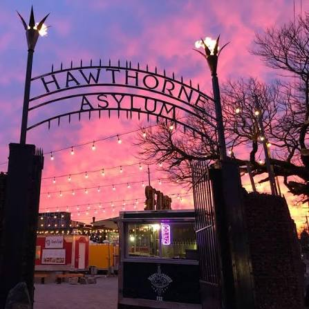
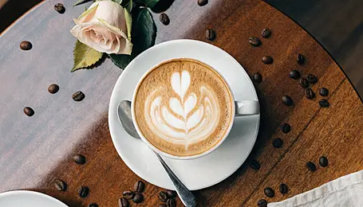
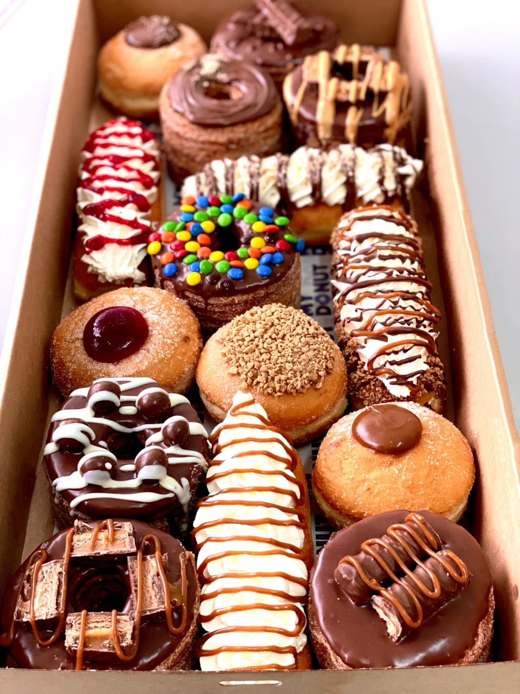
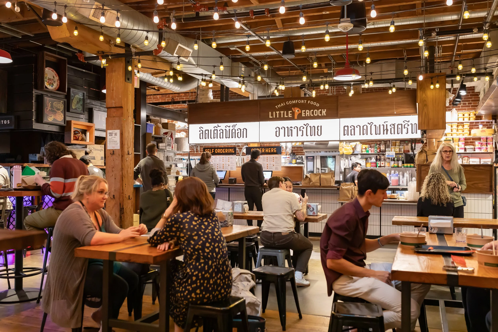
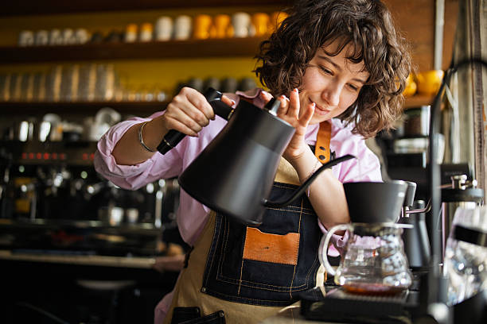
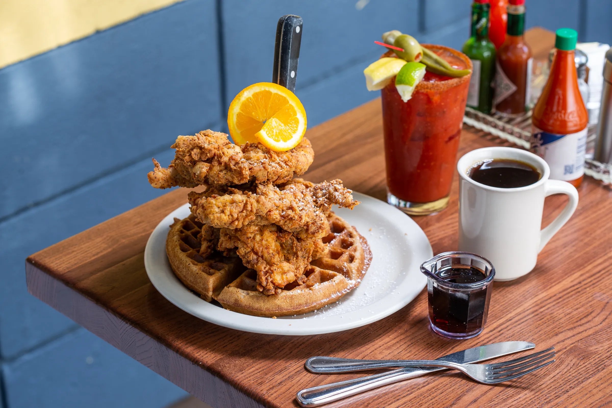

Food PodHawthorne Asylum Food Cart Pod
A popular open-air pod built around a central fire pit, featuring dozens of international food carts serving everything from Egyptian street food and wood-fired pizzas to vegan pastries.
Consistently named one of America's best food destinations, Portland offers everything from outdoor food cart pods serving world street food to third-wave coffee pioneer roasters.

Food PodA popular open-air pod built around a central fire pit, featuring dozens of international food carts serving everything from Egyptian street food and wood-fired pizzas to vegan pastries.

Specialty CoffeeA national coffee pioneer born in Portland, famous for direct-trade sourcing, craft nitro cold brew on tap, and historic cafes serving artisanal espresso drinks across the city.

Bakery & SweetsExplore Portland's famous doughnut rivalry: whimsical, playful toppings at 24/7 cash-only Voodoo Doughnut versus gourmet brioche-style pastries crafted with local liquor at Blue Star.

Food HallLocated in the historic 1886 Baggage Building downtown, this indoor food hall brings together top regional chefs serving ramen, gourmet smash burgers, and artisanal soft-serve.

Ethical CoffeePortland's first B-Corp certified coffee roaster, serving ethically sourced Brazilian family-farm coffee in warm, eco-conscious cafes in the Pearl District and Central Eastside.

Farm-To-TableRenowned for legendary Southern comfort cuisine prepared using fresh Pacific Northwest farm ingredients. Famous for buttermilk fried chicken, sweet potato waffles, and praline bacon.